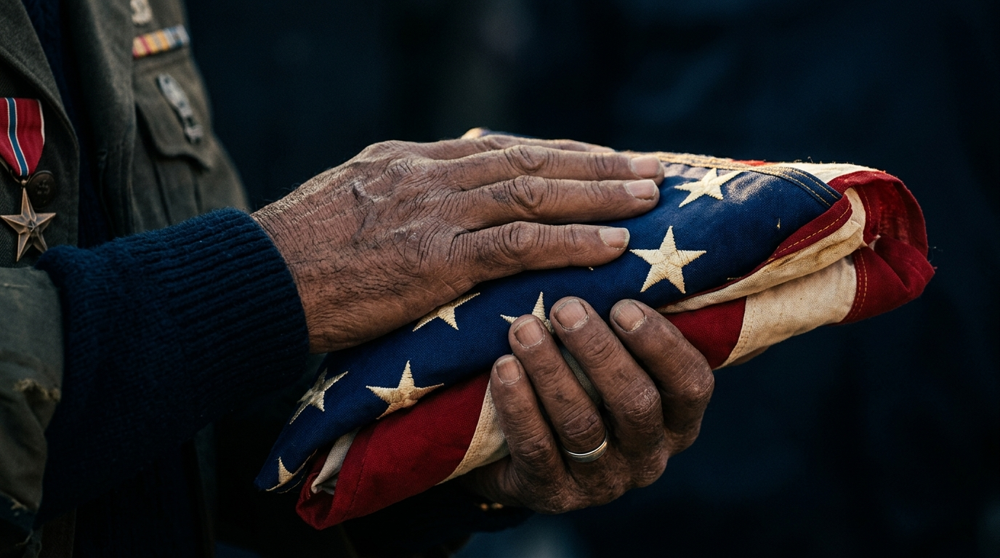

Serving Those
Who Served Us
Honoring America's veterans with specialized, trauma-informed hospice care that recognizes the courage and sacrifice of military service.

Military-Aware Care Built on Understanding
Veterans carry experiences that shape how they face illness, process pain, and approach end of life. The Valor program at Bridge Hospice was built to honor that reality.
Our staff is trained in military culture, service-connected trauma, and the unique emotional landscape that comes with having served. From combat veterans to those who served stateside, every service member deserves hospice care that speaks their language and respects their sacrifice.
Led by Dr. Larry Warmoth, MD, a physician who served in the Texas Air National Guard, the Valor program brings firsthand military understanding to every patient interaction.
Specialized Support for Veterans and Their Families
Every pillar of the Valor program is designed to address the specific needs of veterans approaching end of life.
Trauma-Informed Care
Our clinical staff is specifically trained in military-aware practices. We understand combat stress, PTSD, moral injury, and the ways service-connected experiences can surface during end-of-life care. Every interaction is guided by sensitivity and respect for what veterans have endured.
Benefits Education
Navigating VA benefits and hospice eligibility can be overwhelming for families already dealing with a terminal diagnosis. Our team helps veterans and their loved ones understand available benefits, file necessary paperwork, and connect with VA hospice resources so nothing is left on the table.
Emotional & Spiritual Support
Military service shapes identity at the deepest level. Our chaplains and counselors provide emotional and spiritual care customized to veteran backgrounds, whether that means acknowledging the weight of combat, processing survivor's guilt, or simply creating space for a fellow service member to share their story.
Family Resources
Military families carry their own unique burdens. We provide dedicated support for spouses, children, and caregivers, including bereavement counseling tailored to the realities of military life, peer support connections, and guidance through VA survivor benefits and memorial planning.
Dr. Larry Warmoth, MD
- Board Certified Physician
- Texas Air National Guard
- Hospice & Palliative Medicine
- Valor Program Founder
Dr. Warmoth brings both clinical expertise and personal military experience to his role as Medical Director. His service in the Texas Air National Guard informs every aspect of the Valor program, ensuring that veteran patients receive care shaped by genuine understanding rather than textbook knowledge alone.
Who Qualifies for the Valor Program
The Valor program is available to veterans who meet medical necessity requirements for hospice care. Enrollment in VA benefits is not required to receive our services, though we can help navigate VA-specific hospice benefits for those who are enrolled.
- Veterans with a terminal diagnosis and a prognosis of six months or less, as certified by a physician
- Veterans enrolled in VA healthcare who wish to receive hospice through the VA Community Care program
- Veterans with private insurance, Medicare, or Medicaid coverage for hospice services
- Family members of veterans seeking bereavement and caregiver support resources
How to Get Started
Contact Us
Call our team or submit a referral. Physicians, VA medical centers, hospitals, families, and veterans themselves can all initiate.
Eligibility Review
Our intake team guides you through medical necessity and coordinates with VA benefits where applicable.
Care Begins
A personalized care plan is developed within 24 hours of admission, with military-aware protocols in place from day one.
Honoring Those Who Served
Every veteran earned the right to face life's final chapter with dignity, understanding, and a care team that recognizes the depth of their service.